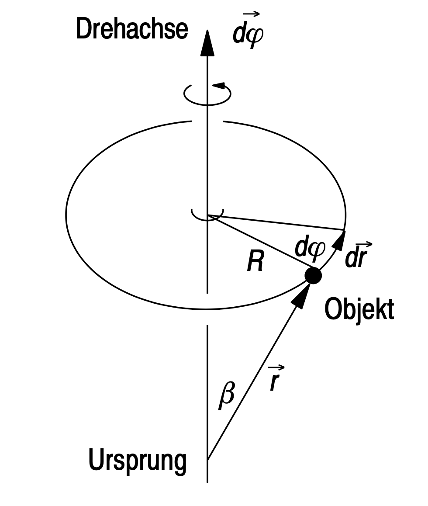
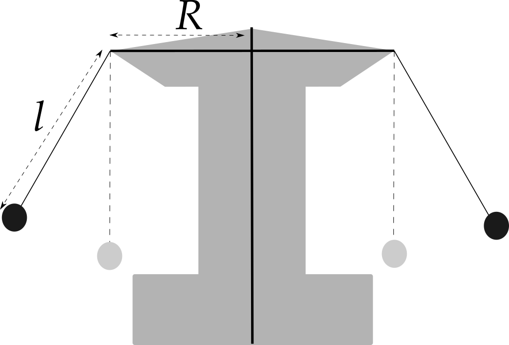

1.5 Drehbewegungen auf Kreisbahnen
In den nächsten Kapiteln wird eine spezielle Klasse von Bewegungen untersucht: die Drehbewegungen, d.h. insbesondere die Bewegung eines Massepunktes auf einer Kreisbahn und später die Rotation eines starren Körpers um einen bestimmten Punkt. Die Drehbewegungen können durch die bisher verwendeten Größen der Kinematik, also Ort, Geschwindigkeit, Beschleunigung und der Dynamik, also Impuls, Kraft, Energie und Leistung beschrieben werden, jedoch es ist es in vielen Fällen weitaus bequemer, dafür einige zusätzliche Größen zu definieren und zu nutzen. Diese zusätzlichen Größen werden insbesondere die mathematische Beschreibung der Drehbewegungen vereinfachen. Dennoch werden Sie in diesem Kapitel einiges Grundwissen aus der Mathematik, insbesondere aus der Vektorrechnung das Kreuzprodukt, benötigen. Falls dieses Ihnen nicht (mehr) geläufig ist, empfehle ich Ihnen, dieses Thema im Kapitel "Mathematische Grundlagen" zu wiederholen.
Die Studierenden sind in der Lage, Drehbewegungen und Bewegungen auf Kreisbahnen qualitativ und quantitativ zu beschreiben und unbekannte Bewegungen vorherzusagen. Die Studierenden arbeiten dabei mit den Begriffen Drehmoment, Trägheitsmoment und Drehimpuls und nutzen diese, um Bewegungsgleichungen der Rotation herzuleiten und aus diesen Größen wir Winkelgeschwindigkeit und Winkelbeschleunigung zu errechnen.
In der Natur kommen Drehbeweungen und Bewegungen von Objekten auf Kreisbahnen (oder allgemeiner: auf elliptischen Bahnen) häufig vor. Hierbei sei insbesodnere die Bewegung von Planeten um die Sonne oder die Bewerung von Satelliten um die Erde genannt. In vielen Bereichen der (Produktions-)Maschinen-, Prozess-, Fahrzeug- und Produktentwicklung spielen Drehbewegungen eine Rolle. Das Drehmoment begegnet dem Ingenieur selbstverständlich nicht nur im Zusammenhang mit dem Anziehdrehmoment von Schrauben, sondern auch überall dort, wo Dinge in Rotation versetzt werden sollen. Das Verständnis der Rotationsbewegung und der damit zusammenhängenden Begriffe ist in diesen berufstypischen Beschäftigungsfeldern unabdingbar.
Die Grundbegriffe der Kinematik sind der Ort, die Zeit, der Weg, die Geschwindigkeit und Beschleunigung
Im Allgemeinen sind diese Größen 3-D-Vektoren, in Spezialfällen können sie auch 2-D-Vektoren oder 1-D-Vektoren sein.
Die Grundbegriffe der Dynamik sind der Impuls, die Kraft, die Energie und die Leistung.
1.5.1 Kreisbahn
Hierbei ist zu bemerken: Findet die Bewegung des Objektes auf einer Kreis- oder Spiralbahn um ein fixes Zentrum statt und ändert sich die Ebene, in der diese Kreisbahn verläuft, nicht mit der Zeit, so kann man die Bewegung kinematisch in 2-D beschreiben. Im Allgemeinen sind jedoch die Größen der Kinematik Vektoren im 3-D. Bei der Behandlung von Kreisbewegungen sollte man jedoch immer in 3D rechnen/arbeiten, wie wir später sehen werden.
Hierbei ist \( T \) die Umlaufdauer des Objektes. \( \vec{s}\left(nT+t\right)=\vec{s}\left(t\right) \) mit \( n\in\mathbb{N} \).
Davon, dass die Funktion \( \vec{s}(t) \) wirklich eine Kreisbahn beschreibt, haben wir auch schon im Kapitel "Kinematik" gesehen. Zur Erinnerung: Eine Bahn ist eine Kurve \( x(y) \) oder \( y(x) \), bei der uns nicht mehr interssiert, wann, also zu welchem Zeitpunkt \(t\) ein Objekt an einem bestimmten Ort ist, sondern nur noch, wie seine Ortskoordinaten voneinander abhängen. Wir hatten die Bahn mit einer "Spur im Schnee" verglichen, bei der zwar bestimmt werden kann, welchen Weg ein Objekt genommen hatte, jeodch nicht mehr, wann genau es an einem bestimmten Punkt war.
Bei den Kreisbewegungen sieht man
$$ s_x(t)^2= R^2 \ \cos^2(\frac{2\pi}{T}t)$$
$$ s_y(t)^2= R^2 \ \sin^2(\frac{2\pi}{T}t)$$
also:
$$s_x^2+s_y^2=R^2$$
oder
$$s_x^2=R^2-s_y^2$$
Diese Formel beschreibt eine Kreisbahn.
\( \varphi_0 = 0 \) Position
\( \varphi = \) \( = \) \( \pi \)
\( R = \)
Die Einheiten des Radius und des Winkels sind: \[ [R] = m \] \[ [\varphi] = 1 \] Ab jetzt im Bogenmaß rechnen: 360° = 2π
1.5.2 Winkel
Nun gibt es zwei Möglichkeiten, den Ort des Objekts anzugeben: Entweder durch den Radius R und den Winkel \( \varphi \) oder durch seinen Ortsvektor: \( \vec{r}=\left(\begin{matrix}r_x\\r_y\\0\\\end{matrix}\right) \).
Man kann leicht von einem System in das andere umrechnen. Sind \( R \) und \( \varphi \) bekannt, ergibt sich \( \vec{r} \) zu \( \vec{r}=R\left(\begin{matrix}\cos{\left(\varphi\right)}\\\sin{\left(\varphi\right)}\\0\\\end{matrix}\right)=\left(\begin{matrix}r_x\\r_y\\0\\\end{matrix}\right) \).
Ein Punkt auf einer Kreisbahn ist also eindeutig bestimmt durch seinen Winkel \( \varphi \) und seinen Radius \( R \). Sein Ort errechnet sich dann aus: \( \vec{r}\left(t\right)=\left(\begin{matrix}R\cos{(\varphi}(t))\\R\ \sin\ \left(\varphi\left(t\right)\right)\\\end{matrix}\right) \), wobei bei einer gleichförmigen Kreisbewegung die folgende Zeitabhängigkeit des Winkels \( \varphi \) gilt: \( \varphi\left(t\right)=\frac{2\pi}{T}t \). Mit Hilfe des „trigonometrischen Pythagoras“ erkennt man, dass \( R=\sqrt{R^2{\cos}^2\left(\varphi\left(t\right)\right)+R^2{\sin}^2\left(\varphi\left(t\right)\right)} \) gilt. Das bedeutet: zu einem beliebigen Zeitpunkt ist der Abstand eines Objektes mit dem oben genannten Ortsvektor zum Koordinatenmittelpunkt immer \( R \). Der Betrag des Ortsvektors \( \vec{r} \) ist der Kreisbahnradius \( R \):
\( \varphi = \)
\( R = \)
\( r_x = \)
\( r_y = \)
Bewegen sich Objekte auf Kreisbahnen, so ist es oft bequemer, den Ort nicht durch einen Ortsvektor \( \vec{r} \) anzugeben, sondern durch den Radius \( R \) der Kreisbahn und durch einen Winkel \( \varphi \), der ab einem beliebigen Nullpunkt gezählt wird. Legt man die Kreisbahn in die x-y-Ebene eines Koordinatensystems, wobei man den Mittelpunkt mit dem Ursprung zusammenfallen lässt, und zählt man die Winkel ab der positiven x-Achse, so gelten folgende Umrechnungen:
\[
\vec{r}=R\left(\begin{matrix}\cos{\left(\varphi\right)}\\\sin{\left(\varphi\right)}\\0\\\end{matrix}\right)
\] \[
R=\sqrt{r_x^2+r_y^2}
\] \[
\tan{\left(\varphi\right)=\frac{r_y}{r_x}}
\]
Zeichnen Sie die Bahn von \( \vec{r}\left(t\right)=\left(\begin{matrix}R\cos{(\varphi}(t))\\R\sin\left(\varphi\left(t\right)\right)\\\end{matrix}\right) \)
1.5.3 Winkelgeschwindigkeit
Der Sekundenzeiger einer Uhr braucht für eine volle Umdrehung eine Minute.
Seine Winkelgeschwindigkeit beträgt somit 360°/(60 s) oder \( \frac{\pi}{60} \text{s}^{-1} \).
Im Allgemeinen ist die Winkelgeschwindigkeit nicht konstant, also muss, analog zur allgemeinen Definition der Geschwindigkeit, zur Berechnung der Winkelgeschwindigkeit ein infinitesimalen Winkel durch eine infinitesimale Zeit geteilt werden.
\[ \omega\left(t\right)=\frac{d}{dt}\varphi\left(t\right) \]
Um umgekehrt aus der Winkelgeschwindigkeit den Winkel zu ermitteln, muss man die Winkelgeschwindigkeitsgleichung integrieren, und man erhält:
\[ \omega\left(t\right)=\varphi_0+\int_{0}^{t}\omega\left(\tau\right)d\tau \]
Dabei ist \( \varphi_0 \) der Winkel des Objekts zur Zeit \( t=0\).
Nun muss noch geklärt werden, wie die Winkelgeschwindigkeit eines Objekts mit seiner Geschwindigkeit zusammenhängt:
Wir betrachen dazu einen Massepunkt, welcher sich bewegt in der x-y-Ebene auf einer Kreisbahn vom Radius \( R \) um den Ursprung bewegt. Sein Ort ist dann: \[ \vec{r}\left(t\right)=R\left(\begin{matrix}\cos{\left(\varphi\left(t\right)\right)}\\\sin{\left(\varphi\left(t\right)\right)}\\0\\\end{matrix}\right) \] Durch Ableiten nach der Zeit erhält man seine Geschwindigkeit: \[ \vec{v}\left(t\right)=\frac{d}{dt}\vec{r}\left(t\right)=\frac{d}{dt}\left(\begin{matrix}R \cos{\left(\varphi\left(t\right)\right)}\\R\sin{\left(\varphi\left(t\right)\right)}\\0\\\end{matrix}\right)\] \[ \vec{v}\left(t\right)=\left(\begin{matrix}-R\dot{\varphi}\left(t\right)\sin{\left(\varphi\left(t\right)\right)}\\+R\dot{\varphi}\left(t\right)\cos{(\varphi\left(t\right)})\\0\\\end{matrix}\right)=R\dot{\varphi}\left(t\right)\left(\begin{matrix}-\sin{\left(\varphi\left(t\right)\right)}\\+\cos{\left(\varphi\left(t\right)\right)}\\0\\\end{matrix}\right) \] Dabei können wir, wie oben definitert, die Größe \( \dot{\varphi} \) durch die Winkelgeschwindigkeit \(\omeg(t)\) ausdrücken. \[ \vec{v}\left(t\right)=R\omega\left(t\right)\left(\begin{matrix}-\sin{\left(\varphi\left(t\right)\right)}\\+\cos{\left(\varphi\left(t\right)\right)}\\0\\\end{matrix}\right) \] Den Betrag der Geschwindigkeit erhalten wir wieder über den trigonometrischen Pythagoras. Er beträgt: \[ \left|\vec{v}\left(t\right)\right|=\sqrt{R^2{\omega\left(t\right)}^2({\sin}^2\left(\varphi\left(t\right)\right)+{\cos}^2\left(\varphi\left(t\right)\right)+0^2}=R\omega\left(t\right)\] Das bedeutet: Ein Objekt auf einer Kreisbahn hat eine höhere Bahngeschwindigkeit, wenn es sich bei der selben Winkelgeschwindigkeit auf einer Bahn mit größerem Radius bewegt. Andererseits hat im Vergleich zweier Objekte, die sich auf Kreisbahnen gleichen Radius bewegen, dasjenige die höhere Bahngeschwindigkeit, welches die höhere Winkelgeschwindigkeit hat.
\( \varphi =\)
\( \omega \) \( < 0\ s^{-1} \) \( = 0\ s^{-1} \) \( > 0\ s^{-1} \)
In welche Richtung zeigt \( \vec{v}\left(t\right)\)?
\[
\vec{v}\left(t\right)=R\omega\left(t\right)\left(\begin{matrix}-\sin{\left(\varphi\left(t\right)\right)}\\\cos{\left(\varphi\left(t\right)\right)}\\\end{matrix}\right)
\]
Bei einer Drehbewegung ist die Winkelgeschwindigkeit der überstrichene Winkel pro Zeiteinheit.
\[ \text{Winkelgeschwindigkeit} = \frac{\text{überstrichener Winkel}}{\text{dafür benötigte Zeit}} \]
Der Zusammenhang zwischen Winkel und Winkelgeschwindigkeit ist:
\[ \omega\left(t\right)=\frac{d}{dt}\varphi\left(t\right)
\] \[
\varphi\left(t\right)=\varphi_0+\int_{0}^{t}\omega\left(\tau\right)d\tau \]
1.5.4 Winkelbeschleunigung
Eine Waschmaschinentrommel in voller Fahrt hat typischerweise 1600 Umdrehungen pro Minute. Angenommen, die Waschmaschine startet im Stillstand und erreicht nach 2 Minuten die maximale Winkelgeschwindigkeit bei konstanter Winkelbeschleunigung. Wie groß ist \( \alpha\left(t\right) \) in der Beschleunigungsphase? Wie groß ist \( \omega\left(t\right) \) und \( \varphi\left(t\right) \)?
\[
\alpha\left(t\right)=\alpha_0
\]
\[
\omega\left(t\right)=\omega_0+\int_{0}^{t}{\alpha_0d\tau}=\alpha_0t+\omega_0
\]
\[
\varphi\left(t\right)=\varphi_0+\int_{0}^{t}\omega\left(t\right)d\tau=\varphi_0+\int_{0}^{t}\left(\alpha_0\tau+\omega_0\right)d\tau=\frac{1}{2}\alpha_0t^2+\omega_0t+\varphi_0
\]
\( \varphi = \)
\( \omega \) \( < 0\ s^{-1} \) \( = 0\ s^{-1} \) \( > 0\ s^{-1} \) \( = \omega_{min} \) \( = \omega_{max} \)
\( \alpha \) \( < 0\ s^{-2} \) \( = 0\ s^{-2} \) \( > 0\ s^{-2} \)
Die Bahnbeschleunigung eines Objektes auf einer Kreisbahn hat im Allgemeinen zwei (linear unabhängige) Vektorterme, mit deren Bedeutung sich weiter unten noch beschäftigt wird.
Die Winkelgeschwindigkeit muss nicht konstant sein, sondern sie kann sich im Laufe der Zeit ändern. Diese Änderung der Winkelgeschwindigkeit wird durch die Winkelbeschleunigung beschrieben.
\[ \text{Winkelbeschleunigung} = \frac{\text{Änderung der Winkelgeschwindigkeit}}{\text{dafür benötigte Zeit}} \]
Der Zusammenhang zwischen der Winkelgeschwindigkeit und er Winkelbeschleunigung ist:
\[
\alpha\left(t\right)=\ \frac{d}{dt}\ \omega\left(t\right)=\ \dot{\omega}\left(t\right)
\] \[
\omega\left(t\right)=\ \omega_0\ +\ \int_{0}^{t}{\ \alpha\left(\tau\right)d\tau}
\]
1.5.5 Spezialfall gleichförmige Bewegung
\( \varphi =\)
\( \omega \) \( < 0\ s^{-1} \) \( = 0\ s^{-1} \) \( > 0\ s^{-1} \)
Die Zeit, die das Objekt benötigt, um einmal im Kreis zu laufen, also um einen Winkel von 360° bzw. \( 2\pi \) zu überstreichen, wird Periodendauer oder Umlaufzeit \( T \) genannt. Sie hat die Einheit s: \( \left[T\right]=s \). Der Zusammenhang der Winkelgeschwindigkeit und der Periodendauer lässt sich wie folgt beschreiben: \[ \varphi\left(t\right)=\omega_0t+\varphi_0 \] \[ \omega_0=\ \frac{\varphi\left(t\right)-\varphi_0}{t} \] Im Zähler des Bruchs steht der in der Zeit \( t \) überstrichene Winkel. Wird für t die Periodendauer \( T \) eingesetzt, so muss im Zähler der Winkel \( 2\pi \) stehen. \[ \omega_0=\ \frac{2\pi}{T} \] Anstelle der Periodendauer \( T \) wird häufig auch die Frequenz f oder die Drehzahl verwendet. Sie gibt an, wie oft sich das Objekt pro Zeiteinheit im Kreis dreht. Man erhält sie aus dem Kehrwert der Periodendauer: \( f=\frac{1}{T}=\frac{\omega_0}{2\pi} \). Die Einheit der Frequenz ist das Hertz (Hz): \( \left[f\right]={Hz=s}^{-1} \)
Die Definitionen der Periodendauer \( T \) und der Frequenz \( f \) gelten auch für ungleichförmige Kreisebewegungen. Dann sind diese allerdings nicht konstant und sind immer nur für infinisismale Zeitintervalle sinnhaft.
\( \omega\ =\ 2\pi\ f \) nennt man die Kreisfrequenz. Bei gleichförmigen Kreisbewegungen kann man die Begriffe Kreisfrequenz und Winkelgeschwindigkeit synonym verwenden.
Aus dem oben stehenden Vektorausdruck für die Bahngeschwindigkeit lässt sich leicht auch der Betrag der Geschwindigkeit ermitteln, da der Vektor auf der rechten Seite der Gleichung ein Einheitsvektor ist: \[ \left|\vec{v}\left(t\right)\right|=R\left|\omega_0\right|=konstant \] Bildet man das Skalarprodukt aus \( \vec r(t) \) und \( \vec v(t) \) erkennt man: Der Vektor der Bahngeschwindigkeit der gleichförmigen Kreisbewegung steht immer (für alle Zeiten \( t \)) senkrecht auf dem Ortsvektor. Da beide Vektoren (für alle Zeiten \( t \)) in der selben Ebene liegen, folgt, dass der Vektor der Bahngeschwindigkeit immer tangential zur Kreisbahn steht. Daher spricht man bei der Bahngeschwindigkeit der gleichförmigen Kreisbewegung auch von einer Tangentialgeschwindigkeit. Der Betrag der Bahn- oder Tangentialgeschwindigkeit ist also bei gleichförmigen Kreisbewegungen konstant. Durch weiteres ableiten nach der Zeit ergibt sich die Beschleunigung des Objektes. \[ \vec{a}\left(t\right)=\frac{d}{dt}\vec{v}\left(t\right)=\frac{d}{dt}\left(\begin{matrix}-R\omega_0\sin{\left(\varphi\left(t\right)\right)}\\+R\omega_0\cos{\left(\varphi\left(t\right)\right)}\\0\\\end{matrix}\right)=-R\omega_0\left(\begin{matrix}\cos{\left(\varphi\left(t\right)\right)}\\\sin{\left(\varphi\left(t\right)\right)}\\0\\\end{matrix}\right) \] In diesem Ausdruck ist der Einheitsvektor zusammen mit dem Radius nichts anderes als der Ortsvektor. Hier können diese Größen deswegen gegeneinander ausgetauscht werden. \[ \vec{a}\left(t\right)=-\omega_0^2\vec{r}\left(t\right) \] Mit dem Betrag: \[ \left|\vec{a}\left(t\right)\right|=\omega_0^2R=konstant \] Wir sehen: auch bei einer gleichförmigen Kreisbewegung mit konstanter Winkelgeschwindigkeit gibt es eine (Bahn-)beschleunigung. Der Betrag der Beschleunigung ist konstant, nicht aber die Beschleunigung an sich. Diese ändert ständig ihre Richtung. Da sie dem Ortsvektor genau entgegengesetzt ist zeigt Sie immer zum Mittelpunkt der Kreisbahn. Daher spricht man im Allgemeinen von einer Radialbeschleunigung (radial = entlang des Radius). Das bedeutet: bei einer gleichförmigen Kreisbewegung gibt es eine Bahngeschwindigkeit, die wir Tangentialgeschwindigkeit nennen, da sie ihre Richtung immer tangential zur Kreisbahn verläuft und eine Bahnbeschleunigung, die wir Radialbeschleunigung nennen, da ihre Richtung immer entlang des Radius zum Kreismittelpunkt zeigt.
Die Beschleunigung zum Zentrum einer Drehbewegung, die vorhanden sein muss, damit sich das Objekt auf einer Kreisbahn bewegt (und nicht tangential wegfliegt) nennt man außerdem auch Zentripetalbeschleunigung (zentripetal = zum Zentrum hinstrebend). Die nach dem 2. Newton’schen Gesetz entsprechende Kraft nennt man Zentripetalkraft \( F_Z\ =\ F_{ZP} \)
Geostationäre Satelliten umkreisen die Erde so, dass sie immer über dem selben Punkt des Äquators stehen. Wie groß ist der Bahnradius eines jeden geostationären Satelliten?
Da sich Satelliten gleichförmig im Kreis bewegen, müssen sie (durch eien Kraft) zentripetal beschleunigt werden. \[ \vec{\alpha}\left(t\right)=-\omega_0^2\vec{r}\left(t\right) \] Auf einem Satelliten der Masse m muss also eine Kraft der Größe \[ \vec{F}=m\vec{a}\left(t\right)=-m\omega_0^2\vec{r}\left(t\right) \] angreifen. Die einzige Kraft, die auf den Satelliten wirkt, ist die Schwerkraft der Erde, verursacht durch die Gravitationswechselwirkung zwischenm dem Satelliten und der Erde. Die Zentripetalkraft ist also gleich der Gravitationskraft. \[ -m\omega_0^2\vec{r}=-\frac{GmM}{\left|\vec{r}\right|^2}\frac{\vec{r}}{\left|\vec{r}\right|} \] mit der Gravitationskonstante G und der Masse der Erde M. Der Betrag von \(\vec r(t) \) ist der (konstante) Bahnradius R des Satelliten. \[ -m\omega_0^2\vec{r}=-\frac{GmM}{R^3}\vec{r} \] Danach wird die Gleichung nach R aufgelöst: \[ R=\sqrt[3]{\frac{GM}{\omega_0^2}} \] Durch Substitution der Winkelgeschwindigkeit \( \omega_0 \) mit der Umlaufzeit \( T (\omega_0=\frac{2\pi}{T}) \), wird der Bahnradius zu \[ R=\sqrt[3]{\frac{GMT^2}{4\pi^2}} \] Diese Gleichung gilt für jeden Satelliten, der einen Himmelskörper umkreist, nicht nur für geostationäre Satelliten und auch nicht nur für die Erde. Im Falle anderer Planeten oder Himmelskörper muss M durch die Masse des Körpers ersetzt werden, der im Zentrum der Kreisbahn sitzt. Für geostationäre Satelliten beträgt die Umlaufzeit \( T_0=1d=86400s \) und damit wird der Bahnradius des geostationären Satelliten zu: \[ R_0=\sqrt[3]{\frac{GMT_0^2}{4\pi^2}} \]
Da sich Satelliten gleichförmig im Kreis bewegen, müssen sie (durch eien Kraft) zentripetal beschleunigt werden. \[ \vec{\alpha}\left(t\right)=-\omega_0^2\vec{r}\left(t\right) \] Auf einem Satelliten der Masse m muss also eine Kraft der Größe \[ \vec{F}=m\vec{a}\left(t\right)=-m\omega_0^2\vec{r}\left(t\right) \] angreifen. Die einzige Kraft, die auf den Satelliten wirkt, ist die Schwerkraft der Erde, verursacht durch die Gravitationswechselwirkung zwischenm dem Satelliten und der Erde. Die Zentripetalkraft ist also gleich der Gravitationskraft. \[ -m\omega_0^2\vec{r}=-\frac{GmM}{\left|\vec{r}\right|^2}\frac{\vec{r}}{\left|\vec{r}\right|} \] mit der Gravitationskonstante G und der Masse der Erde M. Der Betrag von \(\vec r(t) \) ist der (konstante) Bahnradius R des Satelliten. \[ -m\omega_0^2\vec{r}=-\frac{GmM}{R^3}\vec{r} \] Danach wird die Gleichung nach R aufgelöst: \[ R=\sqrt[3]{\frac{GM}{\omega_0^2}} \] Durch Substitution der Winkelgeschwindigkeit \( \omega_0 \) mit der Umlaufzeit \( T (\omega_0=\frac{2\pi}{T}) \), wird der Bahnradius zu \[ R=\sqrt[3]{\frac{GMT^2}{4\pi^2}} \] Diese Gleichung gilt für jeden Satelliten, der einen Himmelskörper umkreist, nicht nur für geostationäre Satelliten und auch nicht nur für die Erde. Im Falle anderer Planeten oder Himmelskörper muss M durch die Masse des Körpers ersetzt werden, der im Zentrum der Kreisbahn sitzt. Für geostationäre Satelliten beträgt die Umlaufzeit \( T_0=1d=86400s \) und damit wird der Bahnradius des geostationären Satelliten zu: \[ R_0=\sqrt[3]{\frac{GMT_0^2}{4\pi^2}} \]
Es gelten die folgenden Zusammenhänge zwischen den charakteristischen Größen der gleichförmigen Kreisbewegung (mit konstantem Radius \( R \) und konstanter Winkelgeschwindigkeit \( \omega \)) und den Bahnbewegungsgrößen Geschwindigkeit und Beschleunigung.
Umlaufdauer \( T=\frac{2\pi}{\omega} \)
Bei der gleichförmigen Kreisbewegung ist die Winkelbeschleunigung gleich null. Daraus folgt: \[ \alpha\left(t\right)=0 \] \[ \omega\left(t\right)=\omega_0=konstant \] \[ \varphi\left(t\right)=\omega_0t+\varphi_0 \] Das Objekt wird bei der Bewegung immer zum Bahnmittelpunkt hin beschleunigt. Deshalb nennt man die Beschleunigung auch Zentripetalbeschleunigung. Sie beträgt: \[ \vec{a}\left(t\right)=-\omega_0^2\vec{r}\left(t\right) \] \[ \left|\vec{a}\left(t\right)\right|=\omega_0^2R=konstant \] Bahngeschwindigkeit = Tangentialgeschwindigkeit: \[ v=v_B=v_T=\omega R\Longleftrightarrow\omega=\frac{v_T}{R} \] Zentripetalbeschleunigung = Radialbeschleunigung: \[ a=a_{ZP}=\omega^2R=\frac{v_T^2}{R} \]
Bei der gleichförmigen Kreisbewegung ist die Winkelbeschleunigung gleich null. Daraus folgt: \[ \alpha\left(t\right)=0 \] \[ \omega\left(t\right)=\omega_0=konstant \] \[ \varphi\left(t\right)=\omega_0t+\varphi_0 \] Das Objekt wird bei der Bewegung immer zum Bahnmittelpunkt hin beschleunigt. Deshalb nennt man die Beschleunigung auch Zentripetalbeschleunigung. Sie beträgt: \[ \vec{a}\left(t\right)=-\omega_0^2\vec{r}\left(t\right) \] \[ \left|\vec{a}\left(t\right)\right|=\omega_0^2R=konstant \] Bahngeschwindigkeit = Tangentialgeschwindigkeit: \[ v=v_B=v_T=\omega R\Longleftrightarrow\omega=\frac{v_T}{R} \] Zentripetalbeschleunigung = Radialbeschleunigung: \[ a=a_{ZP}=\omega^2R=\frac{v_T^2}{R} \]
Eine Bewegung eines Objektes auf einer Kreisbahn kann man beschreiben mit den Größen:
Winkel \( \varphi\left(t\right) \)
Winkelgeschwindigkeit \( \omega(t)\ =\ \dot{\varphi}(t) \)
Winkelbeschleunigung \( \alpha\left(t\right)=\ \dot{\omega}\left(t\right) \)
Durch Integration kommt man von \( \alpha\left(t\right) \) auf \( \omega\left(t\right) \) und von \( \omega\left(t\right) \) auf \( \varphi\left(t\right) \), analog zu den Bewegungsgleichungen der Kinetik. Im Allgemeinen sind diese Größen 3-D Vektoren. Außerdem sind alle Größen zeitabhängig, in Spezialfällen sind \( \vec{\omega} \) und/oder \( \vec{a} \) zeitunabhängig.
Durch Integration kommt man von \( \alpha\left(t\right) \) auf \( \omega\left(t\right) \) und von \( \omega\left(t\right) \) auf \( \varphi\left(t\right) \), analog zu den Bewegungsgleichungen der Kinetik. Im Allgemeinen sind diese Größen 3-D Vektoren. Außerdem sind alle Größen zeitabhängig, in Spezialfällen sind \( \vec{\omega} \) und/oder \( \vec{a} \) zeitunabhängig.
1.5.6 Winkelgeschwindigkeit als Vektor
\( \varphi =\)
\( \omega \) \( < 0\ s^{-1} \) \( = 0\ s^{-1} \) \( > 0\ s^{-1} \)

Es gilt: \( \frac{U}{\left|d\vec{r}\right|}=\frac{2\pi}{d\varphi}\Rightarrow\frac{2\pi R}{\left|d\vec{r}\right|}=\frac{2\pi}{d\varphi} \). Damit folgt für den Betrag: \( \left|d\vec{r}\right|=Rd\varphi \), diesen Zusammenhang kann man vektoriell schreiben als \( d\vec{r}=d\vec{\varphi}\times\vec{r} \). Mit \( \vec{v}\left(t\right)=\frac{d\vec{r}}{dt} \) folgt \( \vec{v}=\frac{d\vec{\varphi}}{dt}\times\vec{r}=\vec{\omega}\times\vec{r} \). Die Bahngeschwindigkeit ist das Kreuzprodukt aus vektorieller Winkelgeschwindigkeit und \( \vec{r} \).\( z \)
\( \beta \)
\( \varphi \)
\( \omega \)

Durch die Richtung von \( \omega \) ist also die Richtung der Drehachse sowie die Umlaufrichtung festgelegt. Nicht ablesen aus \( \omega \) kann man, ob die Ebene, in der die Drehbeweung bezüglich des Koordiantensystems stattfindet in Bezug auf den Nullpunkt des Koordinatensystems parallel verschoben worden ist. Das sieht man daran, dass ein konstanter Wert \( h \) in der z-Komponente des Vektors \( \vec{r}(t) \) keinen Einfluss auf das Ergebnis des Kreuzproduktes \( \vec{\omega} \times \vec{r} \) hat.
Ein Kettenkarussell rotiere mit konstanter Winkelgeschwindigkeit gegen den Uhrzeigersinn. Die Ketten schließen mit dem Lot einen Winkel \( \alpha \) ein. Wie groß sind die Winkelgeschwindigkeit \( \vec{\omega} \), der Ortsvektor \( \vec{r}\left(t\right) \) und die Geschwindigkeit \( \vec{v}\left(t\right) \)?
Das Koordinatensystem ist so gewählt, dass die Drehachse mit der z-Achse und der Boden mit der x-y-Ebene zusammenfällt. Da sich das Kettenkarussell gegen den Uhrzeigersinn drehen soll, ergibt sich die Winkelgeschwindigkeit zu: \[ \omega\left(t\right)=\omega_0=\left(\begin{matrix}0\\0\\\omega_0\\\end{matrix}\right) \] Der Ortsvektor beträgt: \[ \vec{r}\left(t\right)=(R+l\sin(\alpha))\left(\begin{matrix}\cos{\left(\omega_0t\right)}\\\sin{\left(\omega_0t\right)}\\h\\\end{matrix}\right) \] Die Geschwindigkeit ist das Kreuzprodukt aus Winkelgeschwindigkeit und Ortsvektor: \[ \vec{v}\left(t\right)=\vec{\omega}\left(t\right)\times\vec{r}\left(t\right)=\left(\begin{matrix}0\\0\\\omega_0\\\end{matrix}\right)\times\left(\begin{matrix}\cos{\left(\omega_0t\right)}\\\sin{\left(\omega_0t\right)}\\h\\\end{matrix}\right)R'=\left(\begin{matrix}-\sin{\left(\omega_0t\right)}\\\cos{\left(\omega_0t\right)}\\0\\\end{matrix}\right)R'\ \omega_0 \] Hierbei sei \(R'=R+l\sin(\alpha)\).

Das Koordinatensystem ist so gewählt, dass die Drehachse mit der z-Achse und der Boden mit der x-y-Ebene zusammenfällt. Da sich das Kettenkarussell gegen den Uhrzeigersinn drehen soll, ergibt sich die Winkelgeschwindigkeit zu: \[ \omega\left(t\right)=\omega_0=\left(\begin{matrix}0\\0\\\omega_0\\\end{matrix}\right) \] Der Ortsvektor beträgt: \[ \vec{r}\left(t\right)=(R+l\sin(\alpha))\left(\begin{matrix}\cos{\left(\omega_0t\right)}\\\sin{\left(\omega_0t\right)}\\h\\\end{matrix}\right) \] Die Geschwindigkeit ist das Kreuzprodukt aus Winkelgeschwindigkeit und Ortsvektor: \[ \vec{v}\left(t\right)=\vec{\omega}\left(t\right)\times\vec{r}\left(t\right)=\left(\begin{matrix}0\\0\\\omega_0\\\end{matrix}\right)\times\left(\begin{matrix}\cos{\left(\omega_0t\right)}\\\sin{\left(\omega_0t\right)}\\h\\\end{matrix}\right)R'=\left(\begin{matrix}-\sin{\left(\omega_0t\right)}\\\cos{\left(\omega_0t\right)}\\0\\\end{matrix}\right)R'\ \omega_0 \] Hierbei sei \(R'=R+l\sin(\alpha)\).
Die Richtung des Winkelgeschwindigkeitsvektors ist die Richtung der Drehachse. Sein Betrag ist der überstrichene Winkel pro Zeiteinheit.
Die Geschwindigkeit eines Objektes hängt von seinem Ortsvektor und seiner Winkelgeschwindigkeit ab:
\[
\vec{v}=\vec{\omega}\times\vec{r}
\]
1.5.7 Winkelbeschleunigung als Vektor
\( \varphi = \)
\( \omega \) \( < 0\ s^{-1} \) \( = 0\ s^{-1} \) \( > 0\ s^{-1} \) \( = \omega_{min} \) \( = \omega_{max} \)
\( \alpha \) \( < 0\ s^{-2} \) \( = 0\ s^{-2} \) \( > 0\ s^{-2} \)
Warum der erste Term der Bahnbeschleunigung durch das Kreuzprodukt ersetzt werden kann, sieht man an folgender Herleitung \[ \vec{\omega}\left(t\right)=\left(\begin{matrix}0\\0\\\left|\omega\left(t\right)\right|\\\end{matrix}\right)\Rightarrow\vec{\alpha}\left(t\right)=\left(\begin{matrix}0\\0\\\left|\dot{\omega}\left(t\right)\right|\\\end{matrix}\right) \] \[ \vec{r}\left(t\right)=R\left(\begin{matrix}\cos{\left(\varphi\left(t\right)\right)}\\\sin{\left(\varphi\left(t\right)\right)}\\h\\\end{matrix}\right) \] \[ \vec{\alpha}\left(t\right)\times\vec{r}=\left(\begin{matrix}0\\0\\\left|\dot{\omega}\left(t\right)\right|\\\end{matrix}\right)\times R\left(\begin{matrix}\cos{\left(\varphi\left(t\right)\right)}\\\sin{\left(\varphi\left(t\right)\right)}\\h\\\end{matrix}\right)=R\left(\begin{matrix}\left|\dot{\omega}\left(t\right)\right|\cdot\left(-\sin{\left(\varphi\left(t\right)\right)}\right)\\\cos{\left(\varphi\left(t\right)\right)}\cdot\left|\dot{\omega}\left(t\right)\right|\\0\\\end{matrix}\right)=R\cdot\left|\dot{\omega}\left(t\right)\right|\cdot\left(\begin{matrix}-\sin{\left(\varphi\left(t\right)\right)}\\\cos{\left(\varphi\left(t\right)\right)}\\0\\\end{matrix}\right) \] \[ \text{Daher ist:}\ R\left|\dot{\vec{\omega}}\left(t\right)\right|\left(\begin{matrix}-\sin{\left(\varphi\left(t\right)\right)}\\\cos{\left(\varphi\left(t\right)\right)}\\0\\\end{matrix}\right)=\vec{\alpha}\left(t\right)\times\vec{r} \]
In \( \vec{r}\left(t\right) \) wurde zusätzlich noch eine Höhe \( h \) als z-Komponente eingefügt. Das soll zeigen, dass die Gleichungen auch dann gelten, wenn die Bewegung nicht genau in der x-y-Ebene stattfindet, sondern auch dann gelten, wenn die Bewegung in einer beliebigen um \( h \) verschobenen Ebene parallel zur x-y-Ebene stattfindet.
Der Vektor \( R\cdot\left|\dot{\omega}\left(t\right)\right|\cdot\left(\begin{matrix}-\sin{\left(\varphi\left(t\right)\right)}\\\cos{\left(\varphi\left(t\right)\right)}\\0\\\end{matrix}\right) \) ist senkrecht auf dem Radius und somit wieder tangential zur Kreisbahn. Daher spricht man hierbei von einer Tangentialbeschleunigung.
Bei einer Kreisbewegung mit veränderlicher Winkelgeschwindigkeit setzt sich die Gesamtbeschleunigung zusammen aus der Zentripetalbeschleunigung (Radialbeschleunigung, zum Mittelpunkt zeigend) und dem Term \( \vec{\alpha}\left(t\right)\times\vec{r} \), der die Tangentialbeschleunigung beschreibt und in Richtung der Geschwindigkeit (oder entgegengesetzt zu dieser) zeigt. Bei einer allgemeinen Kreisbewegung ist also die Bahnbeschleunigung (wie schon oben gesehen) aus zwei Termen zusammengesetz. Ein Term (welcher von der momentane Winkelgeschwindigkeit abhängt) zeigt senkrecht zur Tangente an die Kreisbahn radial nach innen, ein weiterer, welcher von der Winkelbeschleunigung abhängt, zeigt tangential entweder in Richtung der Geschwindigkeit oder entgegengesetzt zu dieser. Um die Gesamtbeschleunigung auf das Objekt zu erhalten, muss man diese Vektoren addieren, und man erhält im Allgemeinen einen Vektor, der weder genau radial noch genau tangential zeigt, jedoch in eine radiale Komponente und in einen tangential Komponente aufgeteilt werden kann. Dabei die radiale Komponente dafür verantwortlich, dass das Objekt auf der Kreisbahn gehalten wird, die tangentiale Komponente ist für die Veränderung der Winkelgeschwindigkeit verantwortlich.
1.5.8 Radialgeschwindigkeit
\( \varphi \)
\( \omega \)
\( v_r \)
Für die Bahngeschwindigkeit hatten wir im Abschnitt zur Winkelgeschwindigkeit als Vektor die Formel \( \vec{v} = \vec{\omega}\times \vec{r} \) betrachtet, aus welcher folgt, dass die Bahngeschwindigkeit für ein Objekt auf einer Kreisbahn immer tangential zeigt. Was passiert jedoch, wenn der Geschwindigkeitsvektor des Objektes zusätzlich auch eine radiale Geschwindigkeitskomponente aufweist, also ganz allgemein \( \vec{v} = \vec{v}_r + \vec{v}_t \)? Dann verändert das Objekt den Radius seiner Bahn; zeigt \( \vec{v}_r \) nach innen, so wird der Radius der Bahn mit der Zeit kleiner und zeigt \( \vec{v}_r \) nach außen, so wird der Radius größer. Man erhält eine Spiralbahn, bei der sich der Bahnradius mit der Zeit verändert.